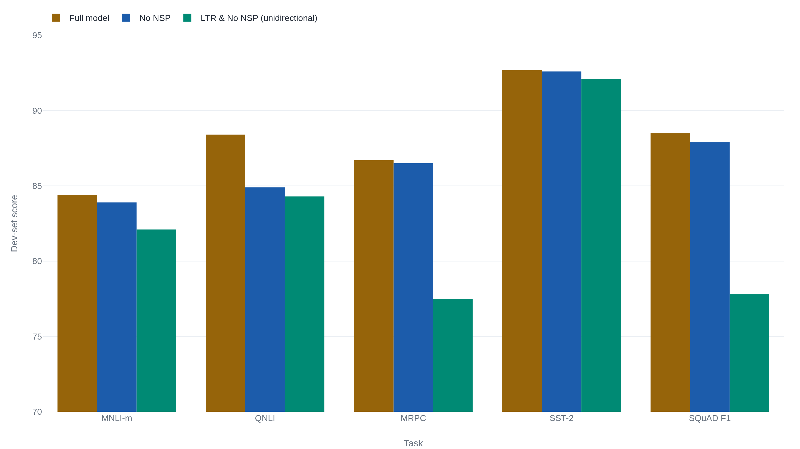

BERT's near-human score on a reasoning test collapsed once the shortcut was closed
Devlin, Chang, Lee and Toutanova's 2018 model set new marks on eleven language tasks by training on masked words instead of the next one. One of its most human-looking scores, though, traced to a handful of words a benchmark let it exploit, not the argument the task was built to test.
Why this matters
BERT is a 2018 Google model that reads a sentence in both directions at once instead of left to right, and it made "pre-train once, fine-tune per task" the default way to build a language system. Search engines, recommendation systems, and the retrieval step behind many chatbots still lean on models built the way BERT was, even as public conversation moved to models that write rather than classify.
- 01
- The paper credited with starting the LLM era never trained a language model: the encoder-decoder architecture BERT keeps half of.
A blanked-out word, a guessed sentence order, eleven firsts
BERT, short for Bidirectional Encoder Representations from Transformers, is a language model Jacob Devlin, Ming-Wei Chang, Kenton Lee, and Kristina Toutanova published at Google in October 2018.1 Their paper reports new state-of-the-art results on eleven language tasks, including a benchmark score of 80.5 percent, up 7.7 points, and a question-answering score of 93.2, up 1.5 points.1 It came in two sizes: BERT_BASE, 12 layers and 110 million parameters, and BERT_LARGE, 24 layers and 340 million.1 BASE matched, layer for layer, a rival OpenAI had published earlier the same year: GPT-1, a 12-layer, 768-dimension decoder trained to predict the next word instead of reading a whole sentence at once.2 Same size, same year, opposite reading direction.
Both sizes trained on the same 3.3 billion words: the 800-million-word BooksCorpus, the same collection of 7,000-plus novels GPT-1 had used, plus 2.5 billion words of English Wikipedia.1 Reading that much text eight hours a day at 250 words a minute would take about 75 years, longer than most human lives. The model went through it in four days, on a bank of specialized chips.1
Reading both directions cost the model its easiest training signal
A standard language model predicts the next word from the words before it: given "the cat sat on the," guess "mat." That signal is easy to build, since every sentence in a corpus generates one automatically, but it only looks one direction: showing the model the real next word while it trains would let it cheat. BERT's authors wanted a model that weighs a word against everything around it, left and right at once, the way a person rereads a finished sentence. So they trained on a different task: blank out 15 percent of a sentence's words and have the model guess each one back from both sides.1 In "The [MASK] sat on the mat, purring," the blank could be "cat" or "kitten," and only the words after it narrow that down. Devlin and his co-authors called this the masked language model objective.
They paired it with a smaller second task: next sentence prediction. Given two sentences, A and B, the model guesses whether B genuinely follows A in the source text or was swapped in at random, a coin flip it sees half the time each way.1 The stated reason is that jobs like question answering need a model that has practiced judging how two sentences relate, not only how words inside one sentence relate.
BERT's own tables show what each half of that training actually bought: the paper reports the same model with pieces removed. Removing next-sentence prediction alone barely moves SQuAD's score.1 Removing the bidirectional reading itself, forcing the model back to left-to-right only, drops the same score by nearly eleven points.1 Bidirectional reading, not the sentence-order guess, is where most of BERT's advantage lived.

The averaged score hides a 600-fold gap in the data behind it
The 80.5 in BERT's abstract is a GLUE score. GLUE, the General Language Understanding Evaluation benchmark, is a nine-task suite built by Alex Wang and five co-authors, independent of BERT's authors.3 The nine tasks do not rest on comparable amounts of evidence. MNLI, a test of whether one sentence logically follows from another, has 393,000 training examples. WNLI, a pronoun-resolution task, has 634.3 That is more than a 600-fold gap underneath a single reported average.
GLUE's own authors do not trust WNLI. Every model they tested failed to beat "most-frequent-class guessing" on it, so its maintainers substitute the majority-class answer for every submission.3 BERT's own Table 1 excludes WNLI from its reported average for that reason, in a footnote most readers skip: "we exclude the problematic WNLI set."1 Excluding it, BERT_LARGE's average across the other eight tasks is 82.1.1 That is not the 80.5 the abstract leads with. The 80.5 is a different number, the official GLUE leaderboard's own score, which folds WNLI back in through that same majority-class substitution.1 Two real numbers, two different accountings, one model, and the paper never flags that its abstract and its own table measure different things.
| Task | Training examples | Metric |
|---|---|---|
| MNLI | 393 000 | accuracy, sentence-pair logic |
| QNLI | 105 000 | accuracy, question-answer fit |
| CoLA | 8 500 | correlation, grammatical judgment |
| MRPC | 3 700 | accuracy/F1, paraphrase match |
| WNLI | 634 | accuracy; predictions overridden |
CoLA is scored by a correlation coefficient, not a percentage. Averaging it against QNLI's plain accuracy already mixes two kinds of number before WNLI enters the picture.3
The question-answering numbers rest on a fixed human baseline. SQuAD, built at Stanford independent of BERT's authors, asks a model to find the exact span of text in a Wikipedia passage that answers a question.4 Human performance was 86.8 F1; BERT's ensemble scored 93.2, six and a half points above the people who wrote the questions.41 A later, harder version added unanswerable questions and raised the human baseline to 89.5; there, BERT_LARGE scored 83.1, six and a half points behind.5 Beating people on one version of a task and trailing them on a harder version is a specific, bounded result, well short of the general claim it came to support.
The word that gave it away
The paper's own language invites the general claim. Explaining why it added next-sentence prediction, Devlin and his co-authors write that they wanted "to train a model that understands sentence relationships."1 That is the authors' own word, not the press's. It is also the word two independent linguists, Emily Bender and Alexander Koller, later flagged as exactly the kind of imprecise language that let a public "understanding" claim grow out of a narrower one about scores.6 Put the claim at its strongest: an 80-plus GLUE score, a Wikipedia-question test beaten outright, a model reading both directions at once. On the numbers alone, "understands" does not sound like a stretch.
Two independent research groups tested that claim, on two different tasks, and both broke it the same way. Timothy Niven and Hung-Yu Kao ran BERT on the Argument Reasoning Comprehension Task: given an argument and two candidate warrants, the model picks the one that makes it valid. BERT scored 77 percent, three points below the untrained human average.7 Niven and Kao found which words predicted the correct warrant regardless of the argument's content, then rewrote the dataset to cancel that pattern. On the rewritten version, BERT's score fell to chance.7 The 77 percent had measured a correlation in the dataset's wording, not the reasoning the task was designed to test.
Tom McCoy, Ellie Pavlick, and Tal Linzen found the same pattern on BERT's largest GLUE task, MNLI, the 393,000-example sentence-logic test. They built a second test set, HANS, to separate real entailment reasoning from shortcuts like assuming two sentences sharing most of their words must agree. Models fine-tuned on MNLI, BERT included, scored far worse than chance on the examples built to punish those shortcuts, evidence the authors read as reliance on shortcuts, not entailment.8 A model can pass a real benchmark and fail a version of the same task built only to remove the pattern it was actually using.
Bender and Koller's explanation does not call BERT unimpressive. It asks what a system trained only on word sequences could learn even in principle: their example is a hyper-intelligent octopus that learns to hold up a fluent conversation purely from the statistical shape of undersea-cable traffic, without ever seeing what the words refer to.6 BERT's masked-word objective puts it in exactly that position.
The recipe had more room in it than anyone tested
BERT's eleven firsts held for less than a year. In 2019, a team led by Yinhan Liu at Facebook AI ran BERT's exact architecture again, changing only the training: ten times the text (160 gigabytes, not 16), longer runs, bigger batches, and no next-sentence prediction.9 They called the result RoBERTa and stated their finding plainly: "BERT was significantly undertrained."9 On RACE, BERT_LARGE had scored 72.0, ahead of everything published before it. The same architecture, with more training data, reached 83.2 under RoBERTa: eleven points higher, on a test BERT itself had just set the standard for.9 None of BERT's architecture changed; the scores people had treated as a ceiling were a floor the field mistook for an answer.
The split that mattered afterward ran between the two halves of the 2017 Transformer architecture. BERT is an encoder, reading a full sequence at once and returning a representation suited to comparing, ranking, and classifying text. GPT kept the decoder half, built to write one word at a time, and that lineage became what the public meant by "AI" in the years after. Google confirmed one concrete use: in October 2019 it announced BERT-based ranking would affect one in ten English search queries, reported independently at the time.10 That is a dated fact about one company's search engine in 2019, not a count of today's software; no public count exists. What holds is the shape of the job: ranking documents against a query, or turning a sentence into a fixed vector to search, is a comparison problem, and comparison is what an encoder is built for.
The takeaway
BERT's tables are real. A model trained to fill in blanked-out words, reading both directions at once, beat every prior system on nine language tasks and outright beat the people who wrote SQuAD's questions. Removing that bidirectional reading alone cost it nearly eleven points on the same test. That result survives every complication: a GLUE average spanning two orders of magnitude in evidence, one of nine tasks not working as a benchmark, a recipe with eleven more points left once someone ran it longer. Understanding sentence relationships is a different claim, one the paper's own words half-invited. Niven and Kao closed one dataset's shortcut and watched a near-human score fall to a coin flip; McCoy, Pavlick, and Linzen found the same collapse inside BERT's biggest, most-cited task. That score was never evidence for the claim it got used to support. Transfer learning through bidirectional pre-training beat task-specific architecture by a real, now-repeated margin, and it needed no help from the other word to be worth the eleven benchmarks it won.
- 01
- RoBERTa: A Robustly Optimized BERT Pretraining Approach: the full replication study, every hyperparameter and score it changed.
- 02
- Climbing towards NLU: On Meaning, Form, and Understanding in the Age of Data: the fuller argument for why a high score and understanding are different claims.
Sources
- arXiv · Devlin, Chang, Lee & Toutanova, "BERT: Pre-training of Deep Bidirectional Transformers for Language Understanding"
- OpenAI · Radford, Narasimhan, Salimans & Sutskever, "Improving Language Understanding by Generative Pre-Training"
- arXiv · Wang, Singh, Michael, Hill, Levy & Bowman, "GLUE: A Multi-Task Benchmark and Analysis Platform for Natural Language Understanding"
- arXiv · Rajpurkar, Zhang, Lopyrev & Liang, "SQuAD: 100,000+ Questions for Machine Comprehension of Text"
- arXiv · Rajpurkar, Jia & Liang, "Know What You Don't Know: Unanswerable Questions for SQuAD"
- ACL Anthology · Bender & Koller, "Climbing towards NLU: On Meaning, Form, and Understanding in the Age of Data"
- arXiv · Niven & Kao, "Probing Neural Network Comprehension of Natural Language Arguments"
- arXiv · McCoy, Pavlick & Linzen, "Right for the Wrong Reasons: Diagnosing Syntactic Heuristics in Natural Language Inference"
- arXiv · Liu, Ott, Goyal, Du, Joshi, Chen, Levy, Lewis, Zettlemoyer & Stoyanov, "RoBERTa: A Robustly Optimized BERT Pretraining Approach"
- Search Engine Land · Barry Schwartz, "Welcome BERT: Google's latest search algorithm to better understand natural language"